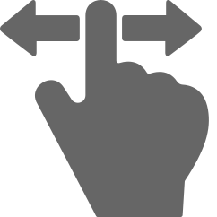
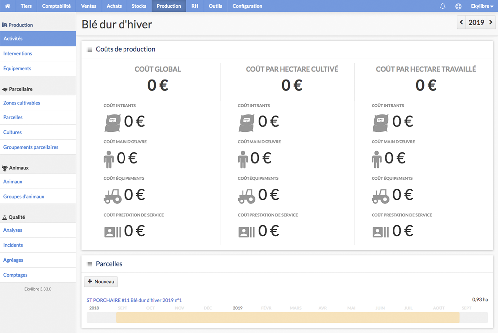
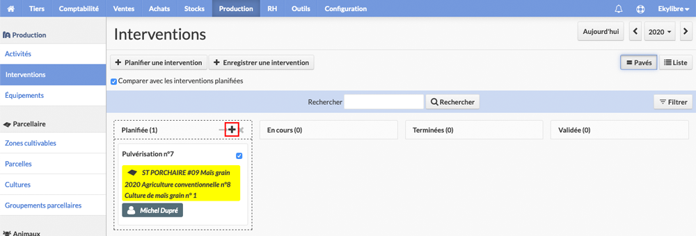
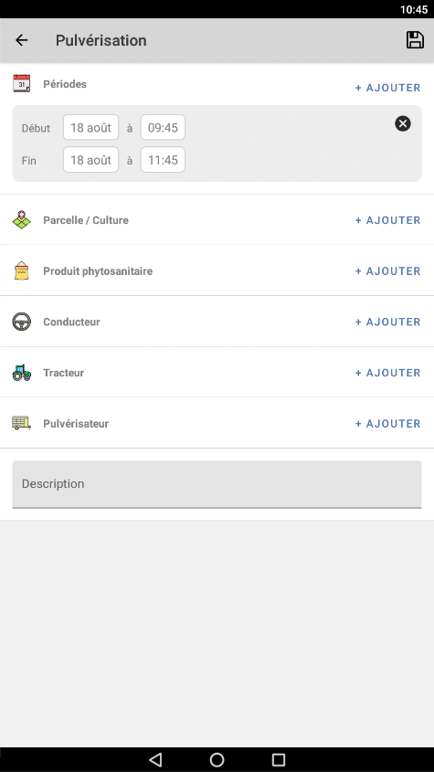
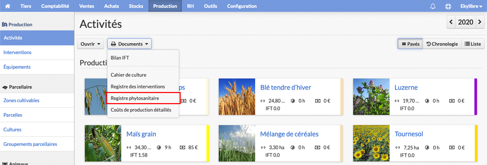

9 - Production
-
1Introduction
-
2Parcellaire
-
3Exploitation
-
4Interface et accès
-
5Comptabilité
-
6Achats
-
7Ventes
-
8Stocks, tiers et RH
-
9Production
-
10Outils
-
11Performance
-
12Ekyviti
Dans ce chapitre, on vous explique :
Glossaire du chapitre
Guide de prise en main • Production • Activités agricoles
a - Activités agricoles
Toutes les activités ne sont pas encore parfaitement gérées dans l'application, notamment les productions animales et de nouvelles fonctionnalités seront progressivement ajoutées pour répondre aux besoins des éleveurs.
Productions animalesAperçu des activités disponibles (liste non exhaustive) :

Glissez pour visualiser l'illustration
Les schémas suivants sont uniquement destinés à illustrer les activités disponibles dans l'application et non à opposer les considérations agricoles aux classifications établies par les botanistes (comme par exemple les cultures de légumes-fruits).
Ekyagri est plus particulièrement adapté aux grandes cultures (céréales, oléagineux, protéagineux, pomme de terre et betterave) :
Glissez pour visualiser l'illustration
Lors de la création d'une nouvelle activité, et pour certaines plantes comme par exemple le maïs ou la betterave, vous pourrez sélectionner une production de référence spécifique parmi les propositions filtrées :
L'application permet également la gestion des productions maraichères et fruitières de plein champ ainsi que de certaines plantes comme par exemple (liste non exhaustive) :
Glissez pour visualiser l'illustration
L'application permet aussi la gestion des productions fruitières dont la récolte est généralement réalisée à la main comme par exemple (liste non exhaustive) :
Glissez pour visualiser l'illustration
Notez que le raisin affiché dans cette illustration fait référence au raisin de table et non au raisin de cuve issu de cépages utilisés en viticulture.
Dans le cadre de la création de nouvelles activités, il faudra rattacher certaines d'entre elles au nom botanique de la variété de la culture défini dans l'application comme par exemple l'anis (apiacée), le litchi (sapindacée), la mangue (mangifera) ou le curcuma et le gingembre (zingibéracée).
En fonction de la taille de la parcelle cultivée (et de la possibilité de réaliser un assolement cohérent en fonction du zoom limité dépendant du fond de carte choisi), Ekyagri permet enfin la gestion de la production d'épices et de plantes (comestibles, aromatiques ou odorantes) comme par exemple (liste non exhaustive) :
Glissez pour visualiser l'illustration
Pour retrouver la plupart de ces cultures dans l'application, sélectionnez "Plante ornementale et PPAM annuelle" ou "Plante ornementale et PPAM pérenne" lors du choix de la "Production de référence" :
Malgré tout le soin apporté au référencement des différentes variétés des cultures, certaines peuvent être absentes de l'application. Sauf cas particuler qui peut nécessiter l'intervention du support, vous pouvez vous appuyer sur une base générique existante pour créer vos activités.
Dans l'exemple suivant, l'activité "Melon Galia" est définie en s'appuyant sur la production de référence "Melon" et sur l'espèce de la culture "Melon", même si l'espèce "Melon Galia" n'est pas disponible par défaut.
Dans cet autre exemple, l'activité "Courgette Amalthée" est définie en s'appuyant sur la production de référence "Courgette" et sur l'espèce de la culture "Courgette", même si l'espèce "Courgette Amalthée" n'est pas disponible par défaut.
Notez enfin qu'actuellement, la culture des champignons (champignons de Paris, pleurotes, morilles, etc.) n'est pas disponible dans l'application.
La gestion de la production végétale est architecturée dans Ekyagri suivant le schéma suivant :

Notez que le fait de créer une production ne génère pas automatiquement une culture. Celle-ci nécessite l'enregistrement d'une intervention d'implantation de culture sur une parcelle ou une partie de parcelle (une intervention de semis est expliquée dans ce chapitre).
Les activités agricoles disponibles dans votre ferme dépendent des opérations ou des saisies déja réalisées en amont (notez que les activités seront automatiquement conservées d'une campagne à la suivante) :
Cliquez sur le lien "Production" dans le "Menu principal" ou sur le bouton "Production" de la page d'accueil :
Si vous avez intégré les données TelePAC, le « Tableau de bord de la production » affiche les zones cultivables de l'exploitation pour la campagne en cours. Pour rappel, les zones cultivables sont les parcelles physiques, durables dans le temps qui ne dépendent pas des campagnes. Une fois qu'elles sont bien enregistrées, il n'y a donc plus besoin de revenir dessus, sauf cas particulier pour ajout ou modification (vente ou achat de terres agricoles).
Le « Tableau de bord de la production » après import d'une déclaration TelePAC
Activez ou masquez les marqueursdes SNA (surfaces non agricoles) via le sélecteur "Fonds de carte et couches" symbolisé par l'icônesituée en haut à droite de la carte avec la case à cocher .
.

Zoomez, puis cliquez sur un marqueur dans la carte pour afficher la catégorie et le type de SNA dans une infobulle.
Liste de SNA issues d'un import TelePAC

Si la liste des activités est trop importante, son affichage est susceptible d'être tronqué dans la "Carte". Passez en mode plein écran avec le bouton "Agrandissement"à gauche de la carte pour bénéficier d'un plus large espace de visualisation. Cliquez à nouveau sur ce bouton ou pressez la touche "esc" pour revenir à un affichage normal.
Guide de prise en main • Production • Exploitant et propriétaire
1 – Définir un exploitant et un propriétaire
Si vous souhaitez distinguer l'exploitant du propriétaire d'une même zone cultivable, comme par exemple dans le cadre d'un bail rural (fermage), où le bailleur confie à un agriculteur le soin de cultiver une terre sous contrat, il est possible de renseigner ces informations dans Ekyagri | Ekyviti.

Cliquez sur le lien "Production" dans le "Menu principal" ou sur le bouton "Production" de la page d'accueil :
Dans la barre latérale du module, cliquez sur "Zones cultivales" dans la section "Parcellaire" symbolisée par l'icône de parcelles et activez la vue "Liste" en haut à droite de la fenêtre principale.
Toutes les zones cultivables issues de l'import du fichier TelePAC, du RPG, de la conversion du CVI en parcellaire cultural (fonctionnalité disponible dans l'offre Ekyviti) ou dessinées à la main sont listées ici.
Cliquez sur l'icône représentant un "Crayon"à gauche du nom de la zone cultivable à modifier.
Renseignez les champs "Exploitant" et "Propriétaire" en sélectionnant, dans les deux listes déroulantes, les tiers préalablement définis ou créez-en de nouveaux à la volée.

Cliquez sur Modifier pour valider l'opération.

Dans la vue "Liste", les colonnes "Exploitant" et "Propriétaire" sont maintenant complétées avec le nom des tiers choisis à l'étape précédente.
Guide de prise en main • Production • Nouvelle activité
2 – Procédure pour créer de nouvelles activités
Si vous n'avez pas besoin de créer des activités supplémentaires, passez directement à la section « Création des productions dans une campagne » de ce chapitre, sinon, le processus suivant vous guide pour en paramétrer de nouvelles.
Cliquez sur le lien "Production" dans le "Menu principal" ou sur le bouton "Production" de la page d'accueil :
L'application affiche le tableau de bord de la production pour la campagne en cours.
Dans la barre latérale du module "Production", cliquez sur "Activités" dans la section "Production" symbolisée par l'icône d'une fermepour afficher la liste des activités.
Deux affichages sont possibles :
Seul le bouton "Nouvelle activité" est disponible si vous n'avez pas importé de fichier TelePAC ou si vous n'avez créé aucune activité dans l'assistant de démarrage.
Sinon, un bouton "Ouvrir" permet de dérouler une liste avec les activités issues du fichier TelePAC ou créées dans l'assistant de démarrage, ainsi qu'un lien "Nouvelle activité" tout en bas de cette liste.
Cliquez ou sélectionnez "Nouvelle activité", puis choisissez une "Famille" d'activités parmi celles qui sont proposées dans la liste déroulante.
Cliquez sur Valider pour valider l'opération.
Sélectionnez le système de production de l'activité et renseignez tous les champs obligatoires signalés par une astérisque de couleur rouge avec les informations requises pour la définir correctement.
Pour la création d'une activité "Auxiliaire" définie par le choix d'un "Type de centre analytique" et prise en compte dans les offres "Performance" d'Ekylibre pour le calcul des budgets, référez-vous aux explications délivées dans le chapitre "Performance", section « Paramétrage des activités auxiliaires ».
Choisissez une "Espèce" parmi les propositions filtrées de la liste déroulante prévue à cet effet.
Modifiez, le cas échéant, la "Campagne annuelle de production (année N)" grâce aux 2 sélecteurs de date mis à votre disposition.
Si une séquence analytique a été préalablement paramétrée avec le segment "Activités", saisissez un code unique composé de 2 caractères pour identifier l'activité. Ce code est requis pour réaliser un échange comptable au format Isacompta, configuré avec la transmission de cette information.
Activités pérennes
Par défaut, la sélection de la "Production de référence" détermine automatiquement le "Cycle de production" le plus adapté. Si cela s'avère cependant nécessaire, activez le bouton radioà gauche du cycle correspondant à votre activité et sélectionnez la 1re année de production dans la liste déroulante.
Pour utiliser les "Itinéraires culturaux" disponibles dans les offres "Performance" d'Ekyagri et Ekyviti, référez-vous aux explications délivées dans le chapitre "Performance", section « Paramétrage des activités principales ».
Cliquez sur Créer pour valider l'opération.
Depuis la section "Parcelles" de la vue détaillée d'une activité pérenne, l'édition d'une parcelle permet de définir une date de "Début des travaux sur la parcelle" et de renseigner le début et la fin des "Campagnes prévisionnelles de pleine production".
La nouvelle activité est automatiquement ouverte pour la campagne en cours. Lors du paramétrage d'une campagne ultérieure, elle restera disponible dans la liste déroulante "Ouvrir". Vous pourrez la sélectionner pour créer une nouvelle production comme décrit dans la section « Création des productions dans une campagne » de ce chapitre.
L'activité est maintenant ouverte pour la campagne en cours.

Répétez ce processus pour chaque nouvelle activité que vous souhaitez créer et ouvrir pour la campagne en cours.
Pour créer une nouvelle activité, sélectionnez "Gérer les activités" dans la liste déroulante…
… puis sélectionnez "Nouvelle activité" pour répéter la procédure autant de fois que nécessaire.
La fenêtre principale s'enrichira progressivement avec toutes les activités créées et ouvertes pour la campagne en cours.
Guide de prise en main • Production • Productions
b - Création des productions dans une campagne
Vous pouvez maintenant réaliser l'assolement de vos zones cultivables (ou parties des zones cultivables) avec les activités ouvertes pour la campagne en cours. Les zones cultivables deviendront, dès la création des productions, des parcelles comme expliqué au début de ce chapitre.
Guide de prise en main • Production • Nouvelle production
1 – Procédure pour créer une production sur une zone cultivable
Le processus suivant vous guide pour créer une nouvelle production sur une zone cultivable durant une campagne.
Cliquez sur le lien "Production" dans le "Menu principal" ou sur le bouton "Production" de la page d'accueil :
Sélectionnez la campagne de production avec les flèches etpuis cliquez sur l'année comme par exempleen haut à droite de la fenêtre principale…
etpuis cliquez sur l'année comme par exempleen haut à droite de la fenêtre principale…
… ou, dans la barre latérale du module "Production", cliquez sur "Activités" dans la section "Production" symbolisée par l'icône d'une fermepour afficher la liste des activités.
L'application affiche toutes les activités définies dans la section « Création de nouvelles activités » de ce chapitre.
Cliquez sur le nom de l'activité puis, dans la section "Parcelles", cliquez sur le bouton.

Cliquez successivement dans les deux champs appropriés pour afficher le sélecteur de date et choisir le début et la fin de la période de production (ces champs sont préremplis mais vous pouvez les modifier).
Pour la période de production, sélectionnez les dates comprenant la totalité des interventions en intégrant non seulement le cycle cultural mais également le travail du sol comme par exemple les étapes successives labour-semis-récolte-déchaumage. Elles peuvent être à cheval sur deux années comme illustré dans le schéma ci-dessous (moyennes constatées).
Dans la liste déroulante "Utilisation", choisissez la destination principale de l'activité. Notez qu'il sera toujours possible de cumuler plusieurs matières dans un intervention de récolte comme par exemple grain et paille pour la moisson de céréales à paille (blé, orge, avoine, seigle, triticale).
Dans la liste "Zone cultivable", choisissez la zone à assoler (elle peut déjà être sélectionnée en fonction de votre parcours utilisateur). Les zones affichées sont celles issues de l'import d'un fichier TelePAC, du RPG (registre parcellaire graphique), d'un fichier géographique, et/ou celles dessinées à la main.
En option, et de préférence pour les plantations pérennes, renommez la parcelle si l'utilisation d'un champ libre personnalisé a été paramétré dans les réglages du format de nommage des parcelles :
Cliquez sur le lien "Paramétrer le format de nommage" pour modifier le format défini par défaut et ne conserver, le cas échéant, que le champ libre pour dénommer les parcelles :
Quand un système de production est associé à des zones cultivables, le filtre d'affichage masque toutes celles qui sont incompatibles avec le système de production choisi lors de la création de l'activité. Exemple : il est impossible de sélectionner une zone cultivable définie avec le système de production "Agriculture conventionnelle" si l'activité est paramétrée avec le système de production "Agriculture biologique" et inversement.
Pour contourner ce type de blocage le cas échéant, modifiez la zone cultivable dans la section "Parcellaire", en sélectionnant la première option (vide) dans la liste "Système de production".
Vous pouvez sélectionner la totalité de la zone cultivable ou vous servir des outils de dessin (les mêmes que ceux utilisés dans le chapitre 3 - Exploitation) pour la diviser et assoler des productions différentes.
Passez de préférence en mode plein écran avec le bouton "Agrandissement"pour bénéficier d'un large espace de travail. Modifiez la zone avec le bouton "Crayon", enregistrez vos modifications via le petit menu horizontal en cliquant sur "Sauver" et pressez la touche "esc" pour revenir à un affichage normal.
Notez que la zone cultivable utilisée pour créer la parcelle reste disponible en totalité pour définir une nouvelle production attenante.

Cliquez sur Créer en bas de la fenêtre principale pour valider l'opération. La nouvelle parcelle s'affiche alors en vert.
La liste des parcelles assolées est automatiquement enrichie pour l'activité choisie.
Budget de l'activité
Notez que les explications concernant la génération et/ou la modification du budget d'une activité sont délivrées dans la section « Budgets prévisionnels » du chapitre Performance.

Sous la section "Carte", plusieurs indicateurs renseignent sur le calcul estimatif des coûts de production de l'activité. Tous ces montants sont automatiquement actualisés avec l'enregistrement successif des interventions, lorsque les prix d'achat et les coûts d'usage en vigueur ont été correctement renseignés pour les intrants, la main d'œuvre, les équipements et les prestations de service.
Ces estimations ne prennent pas en compte les différentes charges directes, les écritures comptables affectées à l'activité, les options analytiques, etc., disponibles exclusivement dans le calcul des « Coûts de production » du "Prévu" et du "Réalisé" des offres Ekyagri et Ekyviti Performance.

La section des "Parcelles" est également automatiquement mise à jour avec la nouvelle zone cultivable assolée.
En mode "Liste", toutes les activités importées ou créées par l'utilisateur sont affichées. Celles qui sont ouvertes pour la campagne sélectionnée sont indiquées avec un fond de couleur vert :
2 – Création des productions à partir du parcellaire
Dans l'objectif de simplifier le processus de création d'une production sur une parcelle, un second parcours utilisateur est à votre disposition pour réaliser cette opération. Il vous permettra, une fois familiarisé(e) avec l'application, de choisir la méthode qui vous semblera la plus pratique à mettre en œuvre.
Le processus suivant vous guide pour initier la création d'une nouvelle parcelle depuis la section "Parcellaire" du module "Production".
Cliquez sur le lien "Production" dans le "Menu principal" ou sur le bouton "Production" de la page d'accueil :
A - Dans la barre latérale du module, cliquez sur "Parcelles" dans la section "Parcellaire" symbolisée par l'icône de parcelles.
Au moins une zone cultivable et au moins une activité doivent être enregistrées pour permettre la création d'une nouvelle production sur une parcelle.
En l'absence d'un ou de ces deux prérequis, le bouton est grisé et un message vous avertit qu'il est impératif de compléter le paramétrage de votre ferme avec les liens permettant de définir ces éléments.
B - Ou, dans la barre latérale du module, cliquez sur "Zones cultivables" dans la section "Parcellaire" symbolisée par l'icône de parcelles, puis activez la vue "Liste" et cliquez sur le nom d'une zone.
A - Depuis la vue "Liste" ou la vue "Carte" des parcelles, cliquez sur le bouton "Créer une parcelle".
B - Ou, dans la section "Productions" de la vue d'une zone cultivable, cliquez sur le bouton "Nouveau".
Dans la fenêtre modaleVoir glossaire, sélectionnez une campagneVoir glossaire, puis choisissez une activité parmi celles qui sont disponibles (issues de l'import d'une déclaration TelePAC ou créées dans l'application) :
A - Depuis la vue "Liste" des parcelles.
B - Ou depuis la vue détaillée d'une zone cultivable.
Cliquez sur Créer pour valider l'opération.
Vous êtes alors automatiquement redirigé(e) vers le formulaire de création de la nouvelle production.
Passez ensuite directement à l'étape no 4 de la section « Procédure pour créer une production sur une parcelle ».
Guide de prise en main • Production • Interventions
c - Enregistrement d'interventions
Maintenant que la parcelle est créée, des interventions peuvent être réalisées sur celle-ci (labour, fertilisation, semis, pulvérisation, récolte, etc.).
Les interventions pour la production végétale sont classées par famille dans l'application ("Entretien des cultures", "Implantation des cultures", "Protection des cultures", "Récolte", "Travail du sol", etc.) et sont enregistrées chronologiquement pour chaque parcelle.
La planification d'interventions est également possible. Elle permet de programmer une intervention et de visualiser d'un seul coup d'œil son état de réalisation (en mode d'affichage "Pavés").
Pour les interventions avec intrants, vous devez préalablement avoir procédé au moins une fois à l'approvisionnement du produit utilisé, soit avec la création d'une nouvelle matière, soit avec la réception d'une commande. Notez que si la quantité utilisée pour réaliser l'intervention est insuffisante, son stock passera en négatif. À charge pour vous de régulariser la situation afin d'éviter une aberration comptable.
Pour connaître les procédures permettant de générer le cahier de culture, le registre des interventions et le registre phytosanitaire, consultez la section « Impression des documents réglementaires » de ce chapitre. Pour éditer le bilan IFT, consultez les informations mises à votre disposition en cliquant sur le lien : « Générer le bilan IFT ».
1 – Introduction à la création des cultures
Dans l'objectif de simplifier le processus de création d'une culture, plusieurs parcours utilisateur sont à votre disposition pour réaliser cette opération. Ils vous permettront, une fois familiarisé(e) avec l'application, de choisir la méthode qui vous semblera la plus pratique à mettre en œuvre.
Le processus suivant vous guide pour initier la création d'une nouvelle culture depuis la section "Parcellaire" du module "Production".
Cliquez sur le lien "Production" dans le "Menu principal" ou sur le bouton "Production" de la page d'accueil :
A - Dans la barre latérale du module, cliquez sur "Cultures" dans la section "Parcellaire" symbolisée par l'icône de parcelles.
Au moins une parcelle et au moins une matière (semences ou plants) doivent être enregistrées pour permettre la création d'une nouvelle culture.
En l'absence d'un ou de ces deux prérequis, le bouton est grisé et un message vous avertit qu'il est impératif de compléter le paramétrage de votre ferme avec les liens permettant de définir ces éléments.
B - Ou, dans la barre latérale du module, cliquez sur "Parcelles" dans la section "Parcellaire" symbolisée par l'icône de parcelles, puis activez la vue "Liste" et cliquez sur le nom d'une parcelle.
A - Depuis la vue "Liste" ou la vue "Carte" des parcelles, cliquez sur le bouton "Nouvelle culture".
B - Ou, dans la section "Cultures" de la vue détaillée d'une parcelle, cliquez sur le bouton "Nouveau".
Choisissez, dans la liste déroulante correspondante, le type d'intervention d'implantation des cultures que vous souhaitez enregistrer :
A - Depuis la vue "Liste" des cultures.
B - Ou depuis la vue détaillée d'une parcelle.
Vous êtes alors automatiquement redirigé(e) vers le formulaire d'enregistrement de la nouvelle intervention d'implantation des cultures.
Passez directement à l'étape no 3 de la section « Procédure pour enregistrer une intervention » qui détaille l'enregistrement d'une intervention de semis.
Guide de prise en main • Production • Enregistrer une intervention
2 – Procédure pour enregistrer une intervention
Le processus suivant vous guide pour saisir une intervention de semis dans l'application. À la fin de cette procédure, vous découvrirez également des informations complémentaires à propos de l'intervention de pulvérisation.
Cliquez sur le lien "Production" dans le "Menu principal" ou sur le bouton "Production" de la page d'accueil :
Dans la barre latérale du module, cliquez sur "Interventions" dans la section "Production" symbolisée par l'icône d'une fermepour afficher la liste des interventions.
Ou bien, depuis le "Tableau de bord de la production", cliquez sur une parcelle dans la carte pour afficher l'infobulle s'y rapportant, puis cliquez sur le bouton "Intervention".
Cliquez sur le bouton "Enregistrer une intervention", puis sélectionnez "Semis" dans la liste déroulante "Implantation des cultures".
Si vous procédez à l'enregistrement d'une intervention de semis « tout-en-un » ou de semis avec pulvérisation, l'utilisation de produits phytosanitaires est documentée dans la partie consacrée à l'intervention de pulvérisation.
Notez que l'affichage ou le masquage des sections regroupant les interventions "Production végétale", "Production animale" et "Production viticole" dépend directement des familles sélectionnées lors de la création des activités :

Activez l'affichage de la carte à la création de l'intervention pour disposer des outils de dessin (les mêmes que ceux documentés dans le chapitre 3 - Exploitation) afin de délimiter la zone travaillée. Si cette opération vous paraît trop fastidieuse à cause de la complexité du contour, désactivez la cartographie et renseignez directement la surface travaillée, comme expliqué à l'étape suivante.
Choisissez la période de travail, sélectionnez la parcelle dans la liste déroulante et remplissez tous les champs signalés par une astérisque de couleur rouge pour la définir correctement (l'application réalise les conversions automatiquement quelle que soit l'unité choisie pour les quantités d'intrants utilisées).
En option, vous pouvez sélectionner une étiquette pour renseigner une information complémentaire et personnalisée (voir la section « Paramétrage des étiquettes » du chapitre Interface et accès).
Lorsque l'option "Afficher la carte lors de la création d'interventions" a été désactivée, la surface totale de la parcelle ou de la culture sélectionnée (ou celles appartenant à un groupement parcellaire) est automatiquement reportée dans le formulaire, et vous pouvez renseigner, le cas échéant, une surface travaillée différente en hectares(s).
Notez que pour une intervention de récolte, il est possible de cumuler plusieurs matières comme par exemple grain et paille pour la moisson de céréales à paille (blé, orge, avoine, seigle, triticale).

Scindez la durée d'une intervention en plusieurs périodes si des pauses significatives fractionnent son déroulement ou si l'intervention est étalée sur plusieurs jours.
Ajoutez tous les personnels qui participent à l'intervention (notez que seuls les équipiers - voir dans le chapitre Stocks, tiers et RH - figurent dans les listes déroulantes "Conducteur" et "Opérateur").
Le symboleindique un calcul automatique des temps d'intervention des équipiers par rapport aux périodes de travail.Ajoutez tous les équipements utilisés pour réaliser l'intervention (les équipements doivent avoir été créés avant la saisie de l'intervention).
Le symboleindique un calcul automatique des temps d'utilisation des équipements par rapport aux périodes de travail.Ekyagri | Ekyviti permet d'enregistrer l'action d'un tiers intervenant sur l'exploitation. Cliquez sur "Ajouter une prestation de service" en bas du formulaire pour sélectionner un fournisseur et une commande.
Un ou plusieurs articles sont alors automatiquement affichés avec les quantités commandées. Si aucune commande n'a été préalablement enregistrée, créez-en une à la volée en sélectionnant "Ajouter un nouvel enregistrement" dans la liste des commandes. Référez-vous au chapitre 6 - Achats pour connaître la procédure d'enregistrement d'une commande. Une réception en mode "Brouillon" est alors automatiquement générée pour la quantité utilisée dans l'intervention.
Notez que l'enregistrement de l'intervention n'est possible que si l'adresse postale de votre exploitation a bien été renseignée dans les paramètres de la société.
Cliquez sur Créer pour valider l'opération ou sur Créer et saisir suivant pour réaliser une nouvelle saisie.
L'application affiche automatiquement la vue détaillée de l'intervention avec ses coûts. Répétez cette opération pour chaque intervention de semis à réaliser sur les différentes parcelles. Le paramétrage des coûts des équipements est documenté ici et ceux de la main d'œuvre sont expliqués dans le chapitre 8.
L'intervention de plantation ou de semis sur une parcelle ou une partie de parcelle crée automatiquement une nouvelle culture. Cette surface travaillée devient disponible pour chaque nouvelle intervention durant la campagne en cours.
La liste des interventions (classées par statut) est également automatiquement enrichie mais notez que si vous avez enregistré une intervention en fin d'année, elle ne sera pas visible dans cette liste l'année suivante.
Si vous constatez l'absence d'une ou plusieurs interventions dans la vue "Pavés" ou "Liste", alors que vous avez correctement procédé à leur enregistrement, vérifiez qu'un critère n'est pas resté actif dans l'en-tête de recherche, notamment quand celui-ci est replié. Dans ce cas, le filtre mémorisé dans l'instance peut masquer l'affichage de certaines interventions.
Guide de prise en main • Production • Groupement parcellaire
3 – Paramétrer un groupement parcellaire
Le groupement parcellaire permet d'associer des parcelles ou des cultures entre elles. L'enregistrement ou la planification d'une intervention à partir d'un groupement parcellaire cible alors automatiquement toutes les parcelles ou les cultures initialement groupées.
Le processus suivant vous guide pour définir un nouveau groupement parcellaire.
Cliquez sur le lien "Production" dans le "Menu principal" ou sur le bouton "Production" de la page d'accueil :
Dans la barre latérale du module, cliquez sur "Groupements parcellaires" dans la section "Parcellaire" symbolisée par l'icône de parcelles.
Tous les groupements parcellaires déjà créés sont listés ici.
Cliquez sur le boutonen haut à gauche de la fenêtre principale.

Nommez le nouveau groupement parcellaire, puis sélectionnez le type principal de la cible en activant le bouton radiositué devant le libellé "Culture" ou Parcelle".
En option, le groupement parcellaire peut être caractérisé par un usage, comme par exemple un itinéraire technique spécifique. Celui-ci est symbolisé par l'utilisation d'une étiquette dont on peut choisir l'intitulé et la couleur comme expliqué dans le chapitre Interface et accès. Cet indicateur est reporté dans la fiche détaillée d'une intervention, à condition qu'elle soit enregistrée ou planifiée depuis la liste des groupements parcellaires.
Dans la liste déroulante "Parcelle / Culture", choisissez un premier élément. Les propositions sont automatiquement filtrées par rapport au choix initial du type de cible défini à l'étape no 3 de cette procédure.
Cliquez sur le lien "Ajouter une Parcelle / Culture" pour sélectionner une deuxième cible.
Répétez cette opération autant de fois que nécessaire pour compléter la sélection de tous les élements à regrouper. Cliquez sur la croixà droite d'une cible pour la supprimer du groupement.
Cliquez sur Créer pour valider l'opération.
Dans la vue "Liste", cochez la case devant un ou plusieurs groupements parcellaires pour activer les boutons permettant de planifier ou d'enregistrer une nouvelle intervention sur toutes les parcelles ou cultures concernées.
devant un ou plusieurs groupements parcellaires pour activer les boutons permettant de planifier ou d'enregistrer une nouvelle intervention sur toutes les parcelles ou cultures concernées.
Guide de prise en main • Production • Pulvérisation
4 – Informations pour enregistrer une intervention de pulvérisation
L'enregistrement d'une intervention de pulvérisation (classée dans les interventions de "Protection des cultures") suit le même processus que celle d'un semis avec la sélection des équipements appropriés, d'un conducteur et l'utilisation d'un ou plusieurs produits phytosanitaires.
Attention lorsque l'affichage de la carte est désactivé : les traitements nécessitant de respecter les contrôles obligatoires liés à la réglementation et de connaître précisément les contours de la zone travaillée, les vérifications sont effectuées à partir de la surface totale de la parcelle ou de la culture.

Notez que les explications délivrées ci-après s'appliquent également aux interventions de Semis « tout-en-un », de Semis avec pulvérisation et de Désherbinage dans le cadre de l'implantation ou de l'entretien de cultures réalisée avec l'utilisation d'un ou plusieurs produits phytosanitaires.
Après sélection et en fonction du système de production défini lors de la création de l'activité (agriculture biologique, conventionnelle, etc.), vous êtes immédiatement prévenu(e) si le produit est applicable ou non sur la culture ou la parcelle sélectionnée avec les mentions Autorisé ou Non autorisé .
Si l'Anses a procédé au retrait de l'autorisation du produit sélectionné, la mention Non autorisé est immédiatement affichée.
Choisissez un usage dans la liste déroulante "Usage" (nécessite que le no d'AMM ait été renseigné dans la fiche de l'article) pour afficher les informations disponibles en provenance d'E-Phy telles que la date d'autorisation, le délai de ré-entrée (DRE), le délai avant récolte (DAR), la dose maximale autorisée, le nombre maximal d'applications, les stades BBCHVoir glossaire d'application et les zones de non-traitement (ZNT aquatique, ZNT arthropodes et ZNT plantes).
Notez qu'en fonction de la culture sélectionnée, choisir l'usage d'un produit phytosanitaire est facilité grâce à un tri pertinent des propositions de la liste déroulante.
Si l'usage sélectionné est autorisé, la mention Autorisé est immédiatement affichée.
Pour ce même produit, si l'usage sélectionné a été retiré, la mention Non autorisé est immédiatement affichée.
Dose autorisée
Dans le champ "Quantité", saisissez la dose du produit utilisé en sélectionnant l'unité adéquate dans la liste déroulante juste à sa droite. Après un contrôle automatique par l'application, un indicateur vous signale si le dosage :
est inférieur à la dose maximale autorisée.
 est égal à la dose maximale autorisée.
est égal à la dose maximale autorisée.
est supérieur à la dose maximale autorisée.
Nombre d'application(s)
En fonction de l'usage sélectionné, un indicateur vous signale si le nombre d'application(s) :
est inférieur au maximum autorisé.
 est égal au maximum autorisé.
est égal au maximum autorisé.
est supérieur au maximum autorisé.
Application fractionnée
Si l'usage d'un produit phytosanitaire autorise le fractionnement de son application (un usage qui possède un intervalle entre applications non nul et un nombre d'application égal à 1), la mention Autorisé est masquée et un message vous informe que vous devez vérifier les conditions d'usage.
Afin de respecter l'intervalle entre deux applications, un message précise la date et l'heure à partir de laquelle une nouvelle application de ce produit est autorisée.
Mentions autorisées
Trois pictogrammes vous informent également des mentions autorisées (leur signification est expliquée dans le chapitre Stocks, tiers et RH) :
Mention abeille.
Liste biocontrôle.
Utilisable en agriculture biologique.
Mélanges de produits phytosanitaires
Si 2 ou plusieurs produits phytosanitaires sont sélectionnés, l'application contrôle automatiquement si le mélange est autorisé ou non avec les mentions Autorisé ou Non autorisé .
Notez que si 3 produits sont sélectionnés et que l'interdiction de mélange ne concerne que 2 d'entre eux, la mention Non autorisé ne s'affiche que pour ces derniers.
Le troisième produit qui n'est pas concerné par l'interdiction conserve alors la mention Autorisé .
Après sélection d'un tracteur, choisissez, dans la liste déroulante, un pulvérisateur porté, semi-porté ou tracté parmi ceux qui sont disponibles et renseignez, en option, le nombre de rangs.
Notez que les champs de "Capacité de stockage volumique nominale" et de "Largeur de travail" sont directement préremplis à partir des "Indicateurs clés" permettant de caractériser l'équipement choisi.

En option : renseignez le volume de bouillie surfacique
Saisissez le volume de bouillie (mélange d'eau claire et d'un ou de plusieurs produits phytosanitaires) en l/ha dans le champ prévu à cet effet.
Lorsque le volume de bouillie surfacique est renseigné, il est reporté et mis en évidence dans la fiche de l'intervention avec une pastille de couleur bleue :
En option : renseignez les réglages de la pulvérisation
Cliquez sur Ajouter "Réglage de la pulvérisation" et remplissez les champs du formulaire pour consigner les réglages de l'équipement utilisé pendant l'intervention : couleur/type et nombre de buses, largeur de traitement, pression réglée en bar, vitesse de travail et régime du moteur.
Notez qu'il est possible d'enregistrer plusieurs réglages lorsque différents types d'applications sont mis en œuvre dans une seule et même intervention avec pulvérisation.
La zone de non-traitement est une distance à respecter vis-à-vis des points d'eau lors de l'application d'un produit phytosanitaire. C'est une mention réglementaire qui accompagne l'Autorisation de Mise sur le Marché et qui est spécifique au produit et à son usage.
Après sélection d'un produit phytosanitaire et de son usage, l'application vous avertit automatiquement si la zone travaillée chevauche ou non la zone de non-traitement avec l'affichage de la mention Autorisé ou Non autorisé .
Exemple de chevauchement d'une zone travaillée alors que la distance ZNT aquatique minimale du produit sélectionné est fixée à 50 m dans les informations en provenance d'E-Phy :
Notez que la sélection d'une ZNT aquatique avec une distance différente dans le menu "Fonds de carte et couches" n'impacte que son affichage dans la carte. Ce changement n'a aucune incidence sur l'analyse permettant de déterminer si l'application d'un produit phytosanitaire est autorisée ou non.
Il est toujours possible d'enregistrer l'intervention sur une partie de parcelle ou de culture afin de respecter la ZNT aquatique. Pour cela, vous disposez de la carte et des outils de dessin (les mêmes que ceux utilisés dans le chapitre 3 - Exploitation) qui permettent de délimiter la zone travaillée en modifiant la position des points qui forment son contour.
Exemple d'édition du contour d'une parcelle ou d'une culture grâce aux outils de dessin :
Une fois que le chevauchement est supprimé et validé, l'application analyse automatiquement cette modification afin de remplacer la mention Non autorisé par celle indiquant que le traitement est maintenant Autorisé .
Délai de ré-entrée (DRE)
Si vous souhaitez enregistrer une nouvelle intervention sans respecter le délai de ré-entrée, l'application vous avertit en indiquant la date préconisée la plus proche. En cas de mélange lors de l'intervention de pulvérisation, c'est le délai le plus long qui s'applique au calcul de la date de ré-entrée.
Notez que ce délai peut être différent selon les usages en plein champ et les applications en milieu fermé. Il peut également concerner le bétail pour certains produits utilisés sur des prairies destinées au pâturage.
Délai avant récolte (DAR)
Si vous souhaitez enregistrer une intervention de récolte sans respecter le délai avant récolte, l'application vous avertit en indiquant la date préconisée la plus proche. En cas de mélange lors de l'intervention de pulvérisation, c'est le délai le plus long qui s'applique au calcul de la date de récolte.

Les interventions de pulvérisation sont toutes consignées dans un registre phytosanitaire dont la tenue est obligatoire. L'application de produits retirés ou dont l'usage a été retiré sur certaines cultures, de mélanges non autorisés ainsi que le non-respect des ZNT aquatiques demeure de la responsabilité de l'exploitant en cas de contrôle.
L'Indice de Fréquence de Traitements (IFT) est un indicateur de suivi de l'utilisation des produits phytosanitaires. L'IFT comptabilise, en fonction des usages sélectionnés, le nombre de doses de référence utilisées par hectare au cours d'une campagne culturale. Cet indicateur peut être calculé pour une ou un ensemble de parcelles et décliné par grandes familles de produits (herbicides, fongicides, insecticides et acaricides, autres produits).
S'appuyant sur les données publiques d'IFT et grâce à la licence ouverte du Ministère de l'Agriculture et de l'Alimentation, Ekyagri et Ekyviti mettent à disposition de l'utilisateur toute une série d'indicateurs permettant d'être informé des traitements appliqués lors des interventions de pulvérisations, de semis « tout-en-un », de semis avec pulvérisation et de désherbinage.
Dans la fiche détaillée de l'intervention
Sous réserve que le produit phytosanitaire appliqué dispose d'un no d'AMM valide et qu'un usage, un dosage et la surface travaillée aient été correctement renseignés, un IFT est calculé pour chaque produit et affiché dans la fiche récapitulative de l'intervention.
Cliquez sur le bouton "Fiche applicateur" pour télécharger une fiche d'intervention au format ODTVoir glossaire récapitulant les réglages du pulvérisateur, le dosage d'un ou de plusieurs produits phytosanitaires, le nombre de pulvérisations requises en fonction de la surface à traiter et de la capacité volumique de stockage de l'équipement utilisé.
Cliquez sur le bouton "Fiche de chantier ETA" (Entreprise de travaux agricoles) pour obtenir la fiche au format ODTVoir glossaire regroupant les mentions réglementaires obligatoires liées à un traitement phytosanitaire.
Notez que ce bouton n'est affiché que si le modèle de document correspondant a été préalablement importé dans le module "Configuration" > "Modèles de document" en cliquant sur le bouton "Charger" et que son statut a bien ensuite été défini sur "Actif" en le modifiant avec le crayon(case cochéeà gauche de son libellé après activation).
Chaque valeur est également un lien web permettant de vérifier, sur le site du Ministère de l'Agriculture et de l'Alimentation, les informations du traitement et la conformité du calcul réalisé.
Dans la vue détaillée d'une activité
Un indicateur affiche l'IFT total pondéré par les surfaces des parcelles et/ou cultures travaillées.
Ce calcul est également affiché, pour chaque activité ouverte durant une campagne, dans la vue "Pavés" regroupant les indicateurs de suivi des activités.
Une notification vous alerte si la campagne en cours n'est pas encore ouverte sur le service en ligne du Ministère de l'Agriculture et de l'Alimentation.
Dans le tableau de bord de la production
Un indicateur IFT permet d'afficher, via un graphe à barres verticales empilées, le total des indices de fréquence de traitements, par activité et par type d'application. Pour configurer le tableau de bord et personnaliser l'emplacement de la cellule, référez-vous au chapitre 4 - Interface et accès.
Masquez ou affichez alternativement un type d'application dans le graphe dynamique en cliquant sur son nom dans la légende comme par exemple "S3 - Herbicides" dans l'exemple ci-dessous.
Dans l'indicateur "IFT", cliquez sur le boutonpour lancer le calcul des IFT d'une campagne précédente (nécessite qu'un no d'AMM valide, un usage, un dosage et la surface travaillée soient renseignés pour chaque traitement).
Rafraîchissez votre navigateur web pour actualiser l'affichage du graphe. Notez qu'en cas de problème de connexion ou de synchronisation avec le site du Ministère de l'Agriculture et de l'Alimentation, une notification vous prévient que vous devez, ultérieurement et dès disponibilité du service, lancer un nouveau calcul pour actualiser les informations de traitement.
Depuis l'indicateur "IFT" (le bilan est généré pour l'ensemble des traitements réalisés durant une campagne donnée), cliquez sur le boutonpour lancer l'opération…
… ou depuis la vue "Pavés" ou "Liste" des activités, cliquez sur le boutonet sélectionnez, dans la liste déroulante, "Bilan IFT" pour obtenir le rapport.

Pour obtenir le bilan d'une seule activité, affichez la vue détaillée de celle-ci, puis cliquez sur le boutonet sélectionnez, dans la liste déroulante, "Bilan IFT".
Notez que si le calcul d'un IFT est égal à zéro, la tâche d'impression dans la liste déroulante du boutonest masquée, et la génération du rapport impossible.
Patientez quelques instants car la fabrication du bilan peut prendre plus ou moins de temps en fonction du nombre d'activités, de parcelles et d'interventions à consigner.
La pastille rouge en haut à droite de la clochevous indique qu'une opération interne a été effectuée par l'application. Cliquez sur celle-ci pour afficher la notification, puis cliquez sur le lien "Votre fichier a été généré avec succès" pour afficher la vignette du nouveau bilan dans "Mes documents".
en haut à droite de la clochevous indique qu'une opération interne a été effectuée par l'application. Cliquez sur celle-ci pour afficher la notification, puis cliquez sur le lien "Votre fichier a été généré avec succès" pour afficher la vignette du nouveau bilan dans "Mes documents".

Cliquez sur la vignette pour afficher le document au format PDF dans votre navigateur. Enregistrez et/ou imprimez le document obtenu.
Le bilan détaille chaque traitement effectué durant une campagne. Il indique la répartition de l'IFT total par familles de produits, filtre les traitements réalisés sur les grandes cultures et liste le total des IFT pour chaque parcelle et par familles de produits. Les IFT de chacun des traitements contenus dans le rapport sont signés électroniquement pour attester la méthode de calcul et un QR Code permet de les vérifier.
Notez que ce document reste accessible à tout moment via le lien "Mes documents" dans la section "Archives"du module "Outils", tant qu'il n'a pas été supprimé.
Une fois la création de l'intervention terminée, l'application récapitule l'ensemble des informations saisies avec la possibilité de définir les coûts de main d'œuvre et d'utilisation des équipements s'ils n'ont pas encore été créés dans un catalogue de prix. Vous pouvez réaliser cette opération à ce moment-là et suivre la procédure suivante à partir de l'étape no 3 ou bien modifier l'intervention en suivant l'ensemble des étapes.
Notez que l'enregistrement d'une intervention définit automatiquement son statut par défaut sur "Terminée".
Guide de prise en main • Production • Coût équipement
5 – Procédure pour définir le coût d'usage d'un équipement
Comme expliqué dans le chapitre Stocks, tiers et RH, si vous souhaitez appliquer des coûts d'usage différents à des articles d'un même type dans une intervention, comme par exemple 2 tracteurs, prenez soin de créer auparavant un nouvel article de l'équipement "Tracteur" pour les différencier. Sinon, le coût d'utilisation d'un des deux tracteurs sera automatiquement répercuté sur l'autre.
Ce schéma récapitule la succession des étapes nécessaires à la création d'un nouveau tracteur défini à partir d'un nouvel article de nature "Équipement" auquel on a attribué un coût d'usage (un coût horaire). Notez que les procédures doivent être réalisées dans l'ordre indiqué.
Glissez pour visualiser l'illustration
Le processus suivant vous guide pour attribuer un coût estimatif d'utilisation à un équipement directement dans une intervention.
Cliquez sur le lien "Production" dans le "Menu principal" ou sur le bouton "Production" de la page d'accueil :
Dans la barre latérale du module, cliquez sur "Interventions" dans la section "Production" symbolisée par l'icône d'une fermepour afficher la liste des interventions, puis cliquez sur le bouton "Pavés" pour activer ce mode d'affichage le cas échéant.
La couleur en arrière-plan du code de la zone cultivable est directement issue de l'activité.
Il est également possible de filtrer la vue des interventions en sélectionnant le planning de votre choix en haut à droite de la fenêtre principale.
Notez que si la case à cocher est activée à gauche de "Comparer avec les interventions planifiées", l'affichage sera sensiblement différent avec l'ajout de l'indicateuren bas de chaque pavé d'intervention (symbole d'une intervention non planifiée) :
est activée à gauche de "Comparer avec les interventions planifiées", l'affichage sera sensiblement différent avec l'ajout de l'indicateuren bas de chaque pavé d'intervention (symbole d'une intervention non planifiée) :
Cliquez sur une intervention pour en afficher un aperçu global, puis cliquez sur le bouton "Voir les détails".
À droite de l'équipement, cliquez soit sur "Ajouter un prix catalogue (Article)" pour affecter un coût d'usage à un article référence de nature “Équipements”, soit sur "Ajouter un prix catalogue (Produit)" pour associer un coût horaire à une machine du parc de l'exploitation.
Notez que, dans cet exemple, le coût estimatif de l'équipier est déjà calculé car un coût horaire de main d'œuvre ou un contrat de travail a préalablement été défini.
Sélectionnez le catalogue "Prix d'usage" dans la liste déroulante "Catalogue de prix". Notez que le nom de l'article, comme par exemple "Tracteur JD 125cv", est celui initialement choisi lors de l'import ou de la création de l'article de référence et n'est pas modifiable ici.
Vérifiez que le "Conditionnement" approprié est correctement affecté par défaut. Renseignez le coût horaire d'utilisation de l'équipement avec le montant exprimé dans la même devise que celle qui a été définie lors du paramétrage initial du catalogue de prix.
Notez que le champ "Produit" n'est affiché que si vous avez sélectionné initialement "Ajouter un prix catalogue (Produit)" dans la fiche détaillée de l'intervention.
Cliquez sur Créer pour valider l'opération.
La valeur du coût horaire est directement répercutée dans l'intervention. Répétez l'opération pour chaque équipement afin d'obtenir une estimation globale du coût de l'intervention.
Sélectionnez l'intervention dans la liste des interventions pour constater le changement de son coût total. Notez que les prix d'usage qui ont été renseignés sont systématiquement appliqués à l'ensemble des interventions.
Guide de prise en main • Production • Planification d'interventions
d - Planification d'interventions
Guide de prise en main • Production • Planification d'interventions
1 – Procédure pour planifier une intervention
Dans un environnement de production impliquant un nombre important de parcelles, de machines et de collaborateurs (techniciens, ouvriers, etc.), la planification d'interventions permet de programmer les travaux sur la ferme et les cultures, d'anticiper les besoins en hommes, en équipements et en intrants. L'application permet également de visualiser facilement la concordance entre la planification d'une intervention et sa réalisation.
Le processus suivant vous guide pour planifier une intervention.
Cliquez sur le lien "Production" dans le "Menu principal" ou sur le bouton "Production" de la page d'accueil :
Dans la barre latérale du module "Production", cliquez sur "Interventions" dans la section "Production" symbolisée par l'icône d'une fermepour afficher la liste des interventions.
En mode d'affichage "Pavés", cochez la case à à gauche de "Comparer avec les interventions planifiées" pour activer l'affichage des indicateurs.
à gauche de "Comparer avec les interventions planifiées" pour activer l'affichage des indicateurs.
Trois icônes différentes renseigneront l'utilisateur sur le statut de chaque intervention "En cours", "Terminée ou "Validée" de la manière suivante :
On entend par non conforme une différence entre ce qui a été enregistré dans l'intervention planifiée et ce qui a réellement été constaté à partir du statut "En cours" : zone travaillée, équipier ou sa période de travail, équipement ou son temps de travail, intrant ou quantité d'intrant utilisée.
Cliquez sur le bouton "Planifier une intervention", puis sélectionnez "Fertilisation" dans la section "Production végétale". Remplissez tous les champs obligatoires signalés par une astérisque de couleur rouge avec les informations requises pour la définir correctement.
Sélectionnez la parcelle dans la liste et remplissez tous les champs signalés par une astérisque de couleur rouge avec les informations requises pour la définir correctement.
Cliquez sur Créer pour valider l'opération ou sur Créer et saisir suivant pour réaliser une nouvelle saisie.
Maintenant que l'intervention est enregistrée, elle est affichée pour l'instant dans la vue "Pavés" sans indicateur dans la colonne "Planifiée".

Notez qu'il est possible de dupliquer une intervention tant que son statut est au stade "Planifiée" :
1 - après avoir coché la case à droite du nom de l'intervention et cliqué sur le symboleen haut de la colonne "Planifiée" dans la vue "Pavés".
à droite du nom de l'intervention et cliqué sur le symboleen haut de la colonne "Planifiée" dans la vue "Pavés".

2 - après avoir cliqué sur l'intervention dans la vue "Pavés", puis sur le bouton "Dupliquer".
3 - après avoir affiché les informations avancées de l'intervention en cliquant le bouton "Voir les détails" situé dans la fenêtre modaleVoir glossaire ci-dessus, puis sur le bouton "Dupliquer".
4 - après avoir coché une ou plusieurs case(s) devant le nom d'une ou plusieurs intervention(s) dans la vue "Liste", et cliqué sur le bouton "Dupliquer".
devant le nom d'une ou plusieurs intervention(s) dans la vue "Liste", et cliqué sur le bouton "Dupliquer".

Dans la fenêtre modaleVoir glossaire de validation, il est alors possible de sélectionner une date différente et de modifier la plupart des paramètres de l'intervention dupliquée.
Cliquez sur Valider pour enregistrer l'opération.
En fonction de vos besoins et de vos préférences, il est possible de définir le format de nommage des parcelles pour ordonner, ajouter ou supprimer les champs qui composent leur nom (cette procédure est expliquée dans le chapitre 4 - Interface et accès).
Dans le cadre de la planification d'interventions, il est possible de suivre l'évolution de celles-ci et de modifier leur statut en fonction de l'avancement des travaux.
Guide de prise en main • Production • Modification d'une intervention
2 – Procédure pour modifier le statut d'une intervention
Le processus suivant vous guide pour modifier le statut d'une intervention.
Cliquez sur le lien "Production" dans le "Menu principal" ou sur le bouton "Production" de la page d'accueil :
Dans la barre latérale du module "Production", cliquez sur "Interventions" dans la section "Production" symbolisée par l'icône d'une fermepour afficher la liste des interventions.
Cochez la case à droite de l'intitulé de l'intervention pour faire apparaître les options "Modifier l'état", "Dupliquer" et "Supprimer". Cliquez ensuite sur l'icônepour modifier le statut de l'intervention.
à droite de l'intitulé de l'intervention pour faire apparaître les options "Modifier l'état", "Dupliquer" et "Supprimer". Cliquez ensuite sur l'icônepour modifier le statut de l'intervention.
Dans la fenêtre modaleVoir glossaire, cochez la case correspondant au nouveau statut de l'intervention : "En cours", "Terminée" ou "Validée". Notez que vous êtes libre de choisir un statut sans passer successivement par les trois proposés.
Cliquez surModifierpour valider l'opération.
L'intervention a basculé dans la colonne "En cours" et l'indicateurest venu enrichir le pavé de l'intervention. Notez que cet indicateur est également un bouton cliquable.

Cliquez sur l'indicateurpour afficher, dans une fenêtre modaleVoir glossaire, le détail de la comparaison entre l'intervention planifiée et son statut "En cours". Notez dans cet exemple la bonne concordance entre les éléments planifiés et réalisés.
Si vous avez modifié l'intervention (zone travaillée, temps de travaux, équipier, équipement, intrant) et que vous définissez son état sur "Terminée", l'indicateurremplace l'indicateur, indiquant que l'intervention n'est plus conforme avec sa planification.
Cliquez sur l'indicateurpour afficher, dans une fenêtre modaleVoir glossaire, le détail de la comparaison entre l'intervention planifiée et son statut "Terminée". Les différences sont signalées en orange (un changement d'équipier dans cet exemple).
Définissez le statut de l'intervention sur "Validée". Ce changement est définitif et verrouille le statut de l'intervention qui reste cependant modifiable le cas échéant.
Guide de prise en main • Production • Suppression d'une intervention
3 – Procédure pour supprimer une intervention
Le processus suivant vous guide pour supprimer une intervention.
Cliquez sur le lien "Production" dans le "Menu principal" ou sur le bouton "Production" de la page d'accueil :
Dans la barre latérale du module "Production", cliquez sur "Interventions" dans la section "Production" symbolisée par l'icône d'une fermepour afficher la liste des interventions.
Cochez la case à droite de l'intitulé de l'intervention pour faire apparaître les options "Modifier l'état" et "Supprimer". Cliquez ensuite sur l'icônepour supprimer l'intervention puis validez sa suppression en cliquant sur "OK" dans la fenêtre de confirmation. La suppression en une seule opération de plusieurs interventions sélectionnées est autorisée.
à droite de l'intitulé de l'intervention pour faire apparaître les options "Modifier l'état" et "Supprimer". Cliquez ensuite sur l'icônepour supprimer l'intervention puis validez sa suppression en cliquant sur "OK" dans la fenêtre de confirmation. La suppression en une seule opération de plusieurs interventions sélectionnées est autorisée.
Notez que dans le cas d'une intervention planifiée, une seconde validation permet, soit de supprimer l'intervention et la demande associée, soit de supprimer uniquement l'intervention.
Guide de prise en main • Production • Application mobile
e - Utilisation de l'application mobile
1 – Enregistrer une intervention avec l'application "Zero"
Téléchargez l'application mobile "Zero" (gratuit) sur le magasin Google Play.
"Zero" permet de saisir, même en mode déconnecté, avec ou sans enregistrement des temps de travaux détaillés, toutes les interventions disponibles dans Ekyagri.Le processus suivant vous guide pour enregistrer une nouvelle intervention de pulvérisation avec l'application mobile "Zero".
Notez que les captures d'écran utilisées pour illustrer les étapes peuvent sensiblement différer de l'affichage obtenu avec votre smartphone ou votre tablette (marques et modèles différents).
Lancez l'application, puis saisissez l'adresse web de la ferme, votre adresse email et votre mot de passe (une seule fois pour les mémoriser dans la gestion des comptes).

"Zero" liste, le cas échéant, les interventions planifiées pour l'équipier identifié à l'étape no 1 de cette procédure. Appuyez sur le bouton "Plus" en bas à droite de l'écran.
en bas à droite de l'écran.
Choisissez, parmi les 4 familles principales d'interventions, celle regroupant les interventions destinées à la "Production végétale", en appuyant sur son bouton.
Choisissez, parmi les types d'interventions définis pour la "Production végétale", celui regroupant les interventions de "Protection des cultures", en appuyant sur son bouton.
Choisissez, parmi les différents types d'interventions de "Protection des cultures", l'intervention de "Pulvérisation", en appuyant sur son bouton.
L'application affiche les différents éléments à renseigner, avec la possibilité de définir plusieurs périodes de travail si l'intervention est fractionnée de manière significative.

Sélectionnez la cible (une culture ou une parcelle assolée avec une activité) sur laquelle est enregistrée l'intervention. Appuyez sur pour valider votre choix.
pour valider votre choix.
Sélectionnez un produit phytosanitaire parmi ceux dont les articles ont été préalablement importés et stockés dans Ekyagri | Ekyviti. Appuyez sur pour valider votre choix.
pour valider votre choix.
Appuyez surpour visualiser la fiche d'un produit phytosanitaire avec ses usages et les informations de protection de l'opérateur lorsqu'elles sont disponibles chez E-Phy.
Choisissez l'usage et renseignez la quantité de produit appliquée. "Zero" contrôle les doses utilisées en fonction de la dose maximale autorisée par l'usage sélectionné.
Ajoutez le(s) conducteur(s) ainsi que les équipements utilisés durant l'intervention. Appuyez sur la disquetteen haut à droite de l'écran pour enregistrer l'intervention.
Ouvrez le menu principal en haut à gauche de l'écran et appuyez sur le bouton "Synchroniser" pour transmettre les données à la ferme dès qu'une connexion est active.
en haut à gauche de l'écran et appuyez sur le bouton "Synchroniser" pour transmettre les données à la ferme dès qu'une connexion est active.
Une fois que les données sont synchronisées avec la ferme, et dans la vue "Pavés" des interventions, la nouvelle pulvérisation est affichée dans la colonne du statut "Terminées", assortie d'une icône représentant un smartphone.
Guide de prise en main • Production • Application mobile
2 – Enregistrer, avec l'application "Zero", une intervention planifiée
Le processus suivant vous guide pour enregistrer, avec l'application mobile "Zero", une intervention préalablement planifiée dans Ekyagri.
Dans la vue "Pavés" des interventions, la pulvérisation demandée est automatiquement placée dans la colonne du statut "Planifiée".
Lancez l'application, puis saisissez l'adresse web de la ferme, votre adresse email et votre mot de passe (une seule fois pour les mémoriser dans la gestion des comptes).
Une fois synchronisée avec la ferme, "Zero" liste automatiquement l'ensemble des interventions planifiées pour l'équipier identifié à l'étape no 1 de cette procédure.
Appuyez sur le bouton de l'intervention pour afficher les éléments définis lors de la planification : parcelle/culture, produit(s) phytosanitaire(s), équipement(s).
Si une préparation est nécessaire avant de débuter l'intervention (mélange, remplissage du pulvérisateur, etc.), appuyez sur le boutonpour comptabiliser ce temps.
Si un déplacement est nécessaire pour rejoindre la parcelle, sur ou depuis l'exploitation, appuyez sur le boutonpour comptabiliser la durée du trajet.
Appuyez sur le boutondès que vous commencez la pulvérisation. Le cumul des différents temps mémorisés est automatiquement actualisé en temps réel.
Pour une courte durée, il est possible de suspendre temporairement l'enregistrement et de relancez celui-ci en appuyant tour à tour sur le bouton "Intervention".
Appuyez sur la disquetteen haut à droite de l'écran si l'intervention doit être interrompue ou fractionnée de manière plus significative, puis appuyez sur "Pause".
Dans la vue "Pavés" des interventions et après synchronisation des données, la pulvérisation est automatiquement déplacée dans la colonne du statut "En cours", assortie d'une icône représentant un smartphone.
Dès qu'une interruption, indiquée par le symbole , est terminée, cliquez à nouveau sur le bouton de l'intervention afin de poursuivre son enregistrement.
, est terminée, cliquez à nouveau sur le bouton de l'intervention afin de poursuivre son enregistrement.
Ajoutez les temps additionnels de trajet et de préparation (la durée de nettoyage des équipements peut être assimilée à un temps de préparation).
Une fois la saisie de l'intervention terminée, appuyez sur la disquetteen haut à droite de l'écran et appuyez sur "Terminer" pour valider l'opération.
Si l'équipement dispose d'un compteur horaire permettant d'enregistrer le nombre d'heures d'utilisation du moteur, renseignez la durée observée.
Ouvrez le menu principal en haut à gauche de l'écran et appuyez sur le bouton "Synchroniser" pour transmettre les données à la ferme dès qu'une connexion est active.
en haut à gauche de l'écran et appuyez sur le bouton "Synchroniser" pour transmettre les données à la ferme dès qu'une connexion est active.
Une fois les données synchronisées avec l'application, le planning des demandes d'intervention est automatiquement mis à jour pour l'utilisateur.
Dans la vue "Pavés" des interventions et après synchronisation des données, la pulvérisation est automatiquement déplacée dans la colonne du statut "Terminées", assortie d'une icône représentant un smartphone.
Guide de prise en main • Production • Cahier de culture
f - Impression des documents réglementaires
La traçabilité des interventions parcellaires est une exigence, soit définie réglementairement, soit liée aux contrats de production.
À partir des interventions enregistrées dans votre ferme Ekyagri, l'application permet d'éditer automatiquement ce document réglementaire.
Le cahier de culture consigne l'ensemble des interventions réalisées dans l'ordre chronologique, par activité, sur les différentes parcelles (implantation d'une culture) et sur les différentes cultures.
1 – Générer le cahier de culture pour une campagne
Le processus suivant vous guide pour obtenir le cahier de culture pour une campagne donnée.
Cliquez sur le lien "Production" dans le "Menu principal" ou sur le bouton "Production" de la page d'accueil :
Dans la barre latérale du module "Production", cliquez sur "Activités" dans la section "Production" symbolisée par l'icône d'une fermepour afficher la liste des activités.

Sélectionnez la campagne avec les flècheset en haut à droite de la fenêtre principale. La période couverte par la création du nouveau cahier est basée sur ce choix.
Cliquez sur le bouton et sélectionnez, dans la liste déroulante, "Cahier de culture" pour obtenir le document.
Patientez quelques instants car la fabrication du cahier peut prendre plus ou moins de temps en fonction du nombre d'activités, de parcelles et d'interventions à traiter.
La pastille rouge en haut à droite de la clochevous indique qu'une opération interne a été effectuée par l'application. Cliquez sur celle-ci pour afficher la notification, puis cliquez sur le lien "Votre fichier a été généré avec succès" pour afficher la vignette du nouveau cahier dans "Mes documents".
en haut à droite de la clochevous indique qu'une opération interne a été effectuée par l'application. Cliquez sur celle-ci pour afficher la notification, puis cliquez sur le lien "Votre fichier a été généré avec succès" pour afficher la vignette du nouveau cahier dans "Mes documents".

Cliquez sur la vignette pour afficher le document au format PDF dans votre navigateur. Enregistrez et/ou imprimez le document obtenu.
Notez que ce document reste accessible à tout moment via le lien "Mes documents" dans la section "Archives"du module "Outils", tant qu'il n'a pas été supprimé.
Si aucune intervention n'a été enregistrée durant la campagne sélectionnée, le cahier de culture l'indique avec la mention "Aucune intervention".
Le cahier de culture peut être généré pour une seule activité. Il consigne l'ensemble des interventions réalisées dans l'ordre chronologique, sur les différentes parcelles (implantation d'une culture) et sur les différentes cultures.
2 – Générer le cahier de culture pour une activité unique
Le processus suivant vous guide pour obtenir le cahier de culture pour une seule activité parmi celles ouvertes durant une campagne donnée.
Cliquez sur le lien "Production" dans le "Menu principal" ou sur le bouton "Production" de la page d'accueil :
Dans la barre latérale du module "Production", cliquez sur "Activités" dans la section "Production" symbolisée par l'icône d'une fermepour afficher la liste des activités.
Sélectionnez la campagne avec les flècheset en haut à droite de la fenêtre principale. La période couverte par la création du nouveau cahier est basée sur ce choix.
Cliquez sur le visuel ou sur le nom d'une activité, puis cliquez sur le bouton et sélectionnez, dans la liste déroulante, "Cahier de culture" pour obtenir le document.
Patientez quelques instants car la fabrication du cahier peut prendre plus ou moins de temps en fonction du nombre de parcelles et d'interventions à traiter.
La pastille rouge en haut à droite de la clochevous indique qu'une opération interne a été effectuée par l'application. Cliquez sur celle-ci pour afficher la notification, puis cliquez sur le lien "Votre fichier a été généré avec succès" pour afficher la vignette du nouveau cahier dans "Mes documents".
en haut à droite de la clochevous indique qu'une opération interne a été effectuée par l'application. Cliquez sur celle-ci pour afficher la notification, puis cliquez sur le lien "Votre fichier a été généré avec succès" pour afficher la vignette du nouveau cahier dans "Mes documents".

Cliquez sur la vignette pour afficher le document au format PDF dans votre navigateur. Enregistrez et/ou imprimez le document obtenu.
Notez que ce document reste accessible à tout moment via le lien "Mes documents" dans la section "Archives"du module "Outils", tant qu'il n'a pas été supprimé.
Si aucune intervention n'a été enregistrée pour l'activité sélectionnée, le cahier de culture l'indique avec la mention "Aucune intervention".
Guide de prise en main • Production • Registre des interventions
3 – Générer le registre des interventions
Le registre des interventions consigne l'ensemble des interventions réalisées sur les parcelles dans l'ordre chronologique.
Le processus suivant vous guide pour obtenir le registre des interventions pour une campagne donnée.
Cliquez sur le lien "Production" dans le "Menu principal" ou sur le bouton "Production" de la page d'accueil :
Dans la barre latérale du module "Production", cliquez sur "Activités" dans la section "Production" symbolisée par l'icône d'une fermepour afficher la liste des activités.

Sélectionnez la campagne avec les flècheset en haut à droite de la fenêtre principale. La période couverte par la création du nouveau registre est basée sur ce choix.

Cliquez sur le bouton et sélectionnez, dans la liste déroulante, "Registre des interventions" pour obtenir le document.
Patientez quelques instants car la fabrication du registre peut prendre plus ou moins de temps en fonction du nombre d'activités, de parcelles et d'interventions à traiter.
La pastille rouge en haut à droite de la clochevous indique qu'une opération interne a été effectuée par l'application. Cliquez sur celle-ci pour afficher la notification, puis cliquez sur le lien "Votre fichier a été généré avec succès" pour afficher la vignette du nouveau registre dans "Mes documents".
en haut à droite de la clochevous indique qu'une opération interne a été effectuée par l'application. Cliquez sur celle-ci pour afficher la notification, puis cliquez sur le lien "Votre fichier a été généré avec succès" pour afficher la vignette du nouveau registre dans "Mes documents".

Cliquez sur la vignette pour afficher le document au format PDF dans votre navigateur. Enregistrez et/ou imprimez le document obtenu.
Notez que ce document reste accessible à tout moment via le lien "Mes documents" dans la section "Archives"du module "Outils", tant qu'il n'a pas été supprimé.
Si aucune intervention n'a été enregistrée durant la campagne sélectionnée, le registre l'indique avec la mention "Aucune intervention".
Comme pour le "Cahier de culture", le registre des interventions peut être généré pour une activité unique, en la sélectionnant préalablement parmi celles ouvertes durant une campagne donnée.
Guide de prise en main • Production • Registre phytosanitaire
4 – Générer le registre phytosanitaire
Le registre phytosanitaire consigne l'ensemble des interventions utilisant des produits phytosanitaires, par parcelle et dans l'ordre chronologique.
Le processus suivant vous guide pour obtenir le registre phytosanitaire pour une campagne donnée.
Cliquez sur le lien "Production" dans le "Menu principal" ou sur le bouton "Production" de la page d'accueil :
Dans la barre latérale du module "Production", cliquez sur "Activités" dans la section "Production" symbolisée par l'icône d'une fermepour afficher la liste des activités.

Sélectionnez la campagne avec les flècheset en haut à droite de la fenêtre principale. La période couverte par la création du nouveau registre est basée sur ce choix.

Cliquez sur le bouton et sélectionnez, dans la liste déroulante, "Registre phytosanitaire" pour obtenir le document.

Patientez quelques instants car la fabrication du registre peut prendre plus ou moins de temps en fonction du nombre d'activités, de parcelles et d'interventions à traiter.
La pastille rouge en haut à droite de la clochevous indique qu'une opération interne a été effectuée par l'application. Cliquez sur celle-ci pour afficher la notification, puis cliquez sur le lien "Votre fichier a été généré avec succès" pour afficher la vignette du nouveau cahier dans "Mes documents".
en haut à droite de la clochevous indique qu'une opération interne a été effectuée par l'application. Cliquez sur celle-ci pour afficher la notification, puis cliquez sur le lien "Votre fichier a été généré avec succès" pour afficher la vignette du nouveau cahier dans "Mes documents".
Cliquez sur la vignette pour afficher le document au format PDF dans votre navigateur. Enregistrez et/ou imprimez le document obtenu.
Notez que ce document reste accessible à tout moment via le lien "Mes documents" dans la section "Archives"du module "Outils", tant qu'il n'a pas été supprimé.
Si aucune parcelle n'a été assolée durant la campagne sélectionnée, le registre l'indique avec la mention "Aucune parcelle sur cette campagne".
Comme pour le "Cahier de culture", le registre phytosanitaire peut être généré pour une activité unique, en la sélectionnant préalablement parmi celles ouvertes durant une campagne donnée.
Guide de prise en main • Production • Indicateurs et suivi des activités
g - Indicateurs et suivi des activités
1 – Procédure pour suivre les activités
Ekyagri vous permet d'avoir une vision globale de l'ensemble des activités, par production et pour l'ensemble du cycle cultural.
Le processus suivant vous guide pour interpréter les indicateurs de suivi des activités.
Cliquez sur le lien "Production" dans le "Menu principal" ou sur le bouton "Production" de la page d'accueil :
Dans la barre latérale du module "Production", cliquez sur "Activités" dans la section "Production" symbolisée par l'icône d'une fermepour afficher la liste des activités.
Dans la vue "Pavés", chaque activité ouverte pour une campagne donnée est affichée avec plusieurs indicateurs :
Production végétale
affiche la surface totale en hectare des parcelles assolées avec cette activité.
affiche le total des temps de travaux enregistrés dans les différentes interventions1.
affiche le nombre total des incidents consignés pour cette activité.
affiche l'IFT total pondéré par les surfaces pour cette activité.
affiche le coût global de production estimatif et calculé pour cette activité2.
1. Les temps de travaux sont automatiquement proratisés lorsqu'une intervention est enregistrée en ciblant des parcelles et/ou des cultures dont les activités sont différentes.
2. Le coût global prend en compte les coûts des intrants, de main d'œuvre, des équipements et des prestations de services enregistrés dans les différents catalogues de prix.
Cliquez sur le bouton "Chronologie" pour afficher la frise permettant de visualiser, d'un seul coup d'œil et pour chaque activité, l'historique des interventions enregistrées durant la période de production.
Les travaux successifs sont représentés par le symboledans la frise. Dans l'exemple suivant, on peut distinguer un labour, un hersage, un semis, deux fertilisations, une pulvérisation et une récolte pour l'activité de blé dur d'hiver :
Notez que la capture d'écran ci-dessus n'est proposée qu'à titre illustratif. La présentation des éléments composant la frise peut sensiblement différer de celle de votre ferme Ekyagri en fonction du format de nommage adopté, de la déclaration TelePAC importée et de la campagne sélectionnée :

Cliquez sur l'icônede votre choix pour afficher la fiche détaillée de l'intervention correspondante.
Guide de prise en main • Production • Coûts de production
h - Coûts de production détaillés
À partir des interventions enregistrées dans votre ferme Ekyagri ou votre domaine Ekyviti, l'application permet d'éditer automatiquement ce document d'aide à la décision. Le rapport des coûts de production détaillés consigne, au format PDF, l'ensemble des dépenses engagées durant une campagne, par une ou l'ensemble des activités ouvertes.
1 – Obtenir les coûts de production pour une campagne
Le processus suivant vous guide pour obtenir le rapport des coûts de production pour une campagne donnée.
Cliquez sur le lien "Production" dans le "Menu principal" ou sur le bouton "Production" de la page d'accueil :
Dans la barre latérale du module "Production", cliquez sur "Activités" dans la section "Production" symbolisée par l'icône d'une fermepour afficher la liste des activités.

Sélectionnez la campagne avec les flècheset en haut à droite de la fenêtre principale. La période couverte par la création du nouveau rapport est basée sur ce choix.

Cliquez sur le bouton et sélectionnez, dans la liste déroulante, "Coûts de production détaillés" pour obtenir le document.
Patientez quelques instants car la fabrication du rapport peut prendre plus ou moins de temps en fonction du nombre d'activités, de parcelles, de quantités d'intrants et de coûts d'usage à traiter (main d'œuvre, équipements, etc.).
La pastille rouge en haut à droite de la clochevous indique qu'une opération interne a été effectuée par l'application. Cliquez sur celle-ci pour afficher la notification, puis cliquez sur le lien "Votre fichier a été généré avec succès" pour afficher la vignette du nouveau cahier dans "Mes documents".
en haut à droite de la clochevous indique qu'une opération interne a été effectuée par l'application. Cliquez sur celle-ci pour afficher la notification, puis cliquez sur le lien "Votre fichier a été généré avec succès" pour afficher la vignette du nouveau cahier dans "Mes documents".
Cliquez sur la vignette pour afficher le document au format PDF dans votre navigateur. Enregistrez et/ou imprimez le document obtenu.
Notez que ce document reste accessible à tout moment via le lien "Mes documents" dans la section "Archives"du module "Outils", tant qu'il n'a pas été supprimé.
2 – Obtenir les coûts de production pour une activité unique
Le processus suivant vous guide pour obtenir le rapport des coûts de production pour une seule activité parmi celles ouvertes durant une campagne donnée.
Cliquez sur le lien "Production" dans le "Menu principal" ou sur le bouton "Production" de la page d'accueil :
Dans la barre latérale du module "Production", cliquez sur "Activités" dans la section "Production" symbolisée par l'icône d'une fermepour afficher la liste des activités.
Sélectionnez la campagne avec les flècheset en haut à droite de la fenêtre principale. La période couverte par la création du nouveau rapport est basée sur ce choix.
Cliquez sur le visuel ou sur le nom d'une activité, puis cliquez sur le bouton et sélectionnez, dans la liste déroulante, "Coûts de production détaillés" pour obtenir le document.

Patientez quelques instants car la fabrication du rapport peut prendre plus ou moins de temps en fonction du nombre de parcelles, de quantités d'intrants et de coûts d'usage à traiter (main d'œuvre, équipements, etc.).
La pastille rouge en haut à droite de la clochevous indique qu'une opération interne a été effectuée par l'application. Cliquez sur celle-ci pour afficher la notification, puis cliquez sur le lien "Votre fichier a été généré avec succès" pour afficher la vignette du nouveau cahier dans "Mes documents".
en haut à droite de la clochevous indique qu'une opération interne a été effectuée par l'application. Cliquez sur celle-ci pour afficher la notification, puis cliquez sur le lien "Votre fichier a été généré avec succès" pour afficher la vignette du nouveau cahier dans "Mes documents".

Cliquez sur la vignette pour afficher le document au format PDF dans votre navigateur. Enregistrez et/ou imprimez le document obtenu.
Notez que ce document reste accessible à tout moment via le lien "Mes documents" dans la section "Archives"du module "Outils", tant qu'il n'a pas été supprimé.
Passez au chapitre suivant de ce guide.